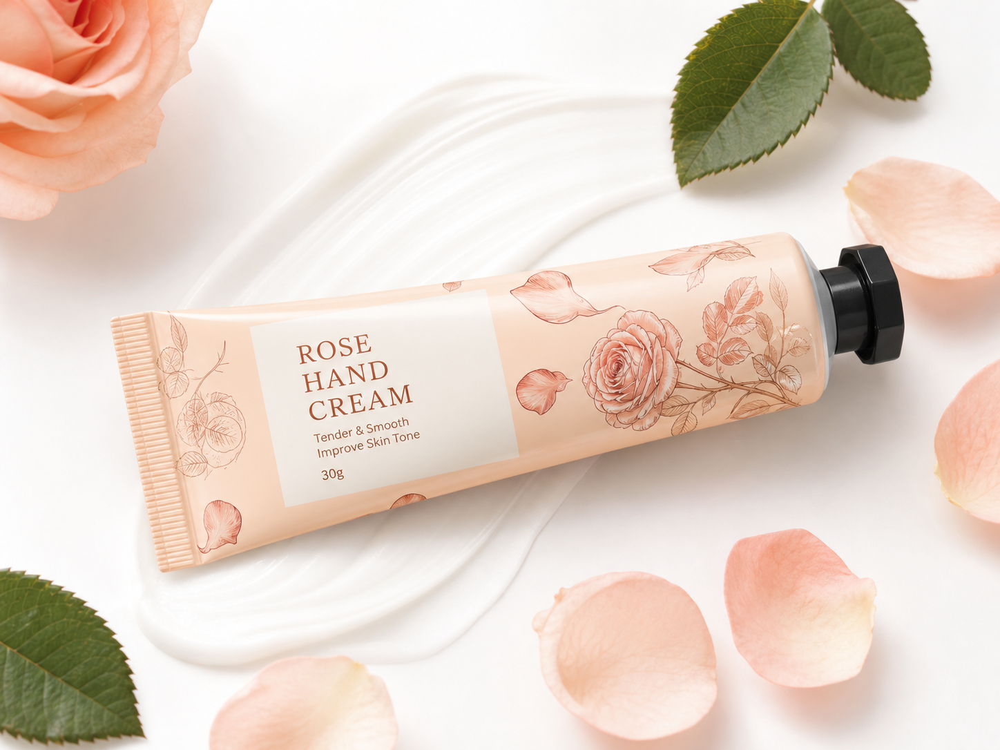

Rose Hand Cream 30g
A classic rose-scented hand cream that helps hands feel tender, smooth and comfortably moisturized.
Product Highlights
- Classic delicate rose fragrance
- Helps improve the look of dull, dry hands
- Soft, elegant after-feel
- Portable 30g tube suitable for retail, travel, salons and gift sets.
- Custom fragrance intensity, texture and packaging available by project.
Product Specifications
| Product | Rose Hand Cream |
| Net Content | 30g |
| Texture | Smooth, quick-absorbing cream |
| Application | Hands, nails and cuticle area |
| MOQ | 500 pieces per scent |
| Reference Price | US$0.10–0.11 / piece |
How to Use
Apply a small amount to clean hands and massage over palms, backs of hands, fingers, nails and cuticles until absorbed. Reapply after hand washing or whenever skin feels dry.
Storage: Keep tightly closed in a cool, dry place away from direct sunlight. For external use only.
For Brands & Distributors
This 30g hand cream is designed for private label launches, salon retail, seasonal gift sets, promotional programs and distributor collections. Mix-and-match scent programs can be discussed for larger projects.
Samples, ingredient documentation, artwork guidance and export carton planning are available before mass production.
Private Label & OEM/ODM Options
Build a coordinated hand-care collection with your own brand identity. Our team can support the product from sample selection through filling, packing and export preparation.
Buyer Information & EU/US Project FAQ
What is the product? The product named above for the professional, distributor, bulk or private-label use stated on this page.
What is the size? The reference net content is the size shown in the product facts/specifications. Alternative fills and formats are reviewed by project.
What is the application? Use only for the application described above; final use instructions and claims are confirmed before launch.
What is the MOQ? The reference MOQ shown above applies only to that format. Final MOQ depends on formula, size, packaging, decoration, testing and order mix.
Can you add a logo? Yes. Private-label labels, boxes, printing or another suitable decoration method can be reviewed subject to packaging and quantity.
Can you customize color? For care products, fragrance, texture or finish may be reviewed where technically suitable; color customization is confirmed by project.
What packaging is available? Tubes, caps, labels, boxes, kits and export cartons may be available. Exact options and packaging MOQs are project-specific.
Can you provide samples? Yes. Include product, size, packaging, logo idea, target market and destination. Sample fees and freight are confirmed before dispatch.
What documents are available? Depending on final formula and market: SDS, ingredient information, COA/batch documents, specifications and testing coordination. EU placement may require an EU Responsible Person, CPSR/PIF and CPNP notification; US requirements may include a Responsible Person, MoCRA facility registration and product listing.
What is the estimated production process? Project brief, technical/packaging review, sample development, sample approval, artwork approval, production, QC, packing, document preparation and shipment. Timing is quoted after confirmation.
How can the buyer request a quote? Email newnail001@gznewnail.com or use the inquiry form with product, size, quantity, logo/packaging, target country, documents, destination and target date. WhatsApp: +86 186 8685 8175.
EU/US compliance note: Final claims, labels, ingredients, testing, responsible-person arrangements and notifications must be reviewed against the final formula and destination-market rules. This page is commercial information, not legal advice.